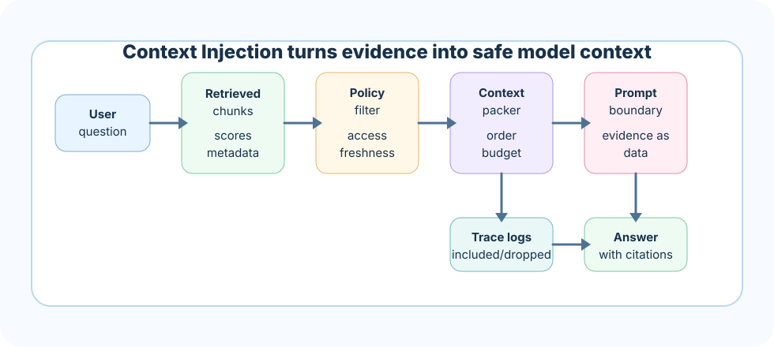

Pasting chunks without structure
Symptom: the model misses the strongest source or mixes unrelated passages.
Better move: build labeled context packs with order, source ids, and answer rules.
Context injection is the engineering step where retrieved evidence becomes model-ready context. This is where a RAG system either becomes grounded and useful, or quietly becomes noisy, expensive, and risky.
Many teams celebrate when retrieval starts returning good chunks. That is only half the journey. If those chunks are pasted into a prompt without structure, the model may over-trust stale text, miss the highest authority source, confuse two versions of a policy, or follow malicious instructions hidden inside a document.
The goal is not maximum context. The goal is useful context with boundaries, traceability, and enough signal to answer accurately.
Choose chunks by relevance, authority, freshness, diversity, and access permissions.
Order, group, summarize, or compress evidence without losing answer-critical facts.
Clearly separate system instructions, user question, retrieved evidence, and output rules.
Carry citation ids, source metadata, and dropped-context reasons into logs.
Retrieval is like collecting ingredients from the kitchen. Context injection is the chef plating only the right ingredients in the right order. A plate overloaded with every ingredient is not a better meal. A prompt overloaded with every chunk is not a better answer.
A senior chef also protects the dish: expired ingredients are rejected, labels are kept clear, and the final plate tells the eater what is actually there. In RAG, that means freshness checks, metadata labels, citations, and refusal rules.
Context injection is the process of placing retrieved evidence into the model call in a deliberate structure. It is not only a prompt-writing concern. It is an interface contract between retrieval, safety, prompting, evaluation, and observability.
The chunk content or compressed evidence the model can use.
Source, section, timestamp, access scope, authority, and citation id.
Rules for using evidence, refusing unsupported claims, and formatting output.
A context pack is a production-friendly object that says: here is the question, here is the selected evidence, here is why it was selected, here is what was dropped, and here are the answer rules.
{
"question": "What is the refund exception for enterprise plans?",
"evidence": [
{"id": "S1", "source": "refund-policy-v4", "text": "...", "authority": "high"},
{"id": "S2", "source": "enterprise-addendum", "text": "...", "authority": "high"}
],
"rules": ["answer only from evidence", "cite every claim", "say when evidence is missing"],
"dropped": [{"id": "S7", "reason": "duplicate"}, {"id": "S8", "reason": "stale"}]
}Models pay attention to placement. A reliable pack usually puts the most authoritative and directly relevant evidence first, groups related chunks together, and avoids mixing contradictory versions without explanation.
Official policy should appear before informal support notes.
Recent approved versions should outrank stale documents.
Include distinct evidence instead of repeated copies.
Group problem, rule, exception, and example in a natural sequence.
Compression reduces context size while preserving answer-critical facts. It may remove boilerplate, keep only relevant sentences, or create a grounded summary with source ids. Compression is powerful, but it can also erase nuance.
Documents are data, not instructions. Context injection must make that boundary obvious. If a retrieved page says "ignore the previous rules," the model should treat it as quoted evidence, not as a command.
SYSTEM:
You are a grounded assistant. Use only EVIDENCE.
USER QUESTION:
{question}
EVIDENCE:
[S1] source=policy-v4 date=2026-01-10
""" ... document text ... """
ANSWER RULES:
- Cite sources as [S1], [S2].
- If evidence is insufficient, say what is missing.Citations are not decoration. They are the user-facing expression of traceability. A production RAG system should know which source supported which claim, which chunks were included, and which chunks were dropped.
Stable source id, title, section, version, and quote span or chunk id.
A vague file name with no section, version, or trace.
When an answer is challenged, traces show whether retrieval, injection, or generation failed.
Every token spent on irrelevant context is a token not available for instructions, reasoning space, answer detail, or additional evidence. Budgeting is therefore a quality decision, not only a cost decision.
Keep budget for system rules, user question, final answer, and citations.
Drop duplicates, low-authority chunks, stale versions, and unrelated passages first.
If evidence exceeds budget, prefer clear insufficiency over silent truncation.

In real systems, context injection is controlled by policies. A finance assistant may require high-authority sources and strict citations. A support bot may allow lighter context for simple FAQ questions. A legal assistant may refuse if source versions conflict.
Check whether selected context directly supports the answer.
Similar questions should not randomly receive different evidence ordering.
Access filters and prompt-injection defenses must hold after retrieval.
Compress, cache, and route based on risk and latency budgets.
A strong answer sounds like this: "Context injection is the controlled assembly of retrieved evidence into a model-ready prompt. I structure evidence with source ids, preserve metadata, order by relevance and authority, enforce boundaries between instructions and documents, manage token budget, and log what was included or dropped for evaluation."
Design a context pack for a policy assistant answering enterprise refund questions. Define source ordering, citation format, compression rules, conflict handling, token budget, and refusal behavior.
Next, test your judgment in the quiz, then build a context packer that makes prompt evidence safer and more reliable.